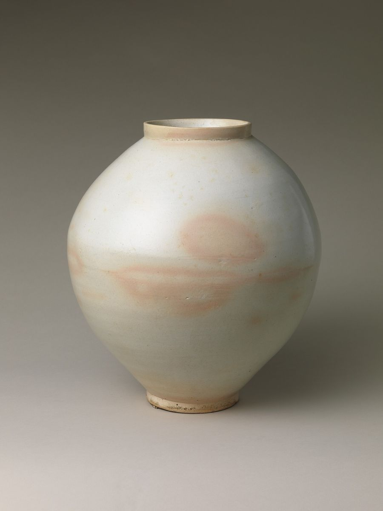
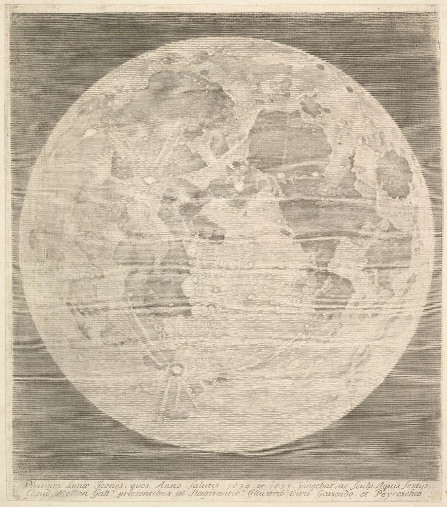

달이 뜨면 문을 엽니다
달의 모양을 닮은 다섯 잔
사진은 메뉴가 아니라, 메뉴의 이름이 된 달입니다. 시그니처 메뉴 자세히 보기


오늘 밤의 메뉴
찜하기와 원두 고르기는 메뉴 페이지에서메뉴 서른여섯 가지는 메뉴 페이지에서 볼 수 있습니다.
자정이 지나도 새벽 두 시까지 불을 켜 둡니다.
사진은 메뉴가 아니라, 메뉴의 이름이 된 달입니다. 시그니처 메뉴 자세히 보기


메뉴 서른여섯 가지는 메뉴 페이지에서 볼 수 있습니다.
자정이 지나도 새벽 두 시까지 불을 켜 둡니다.